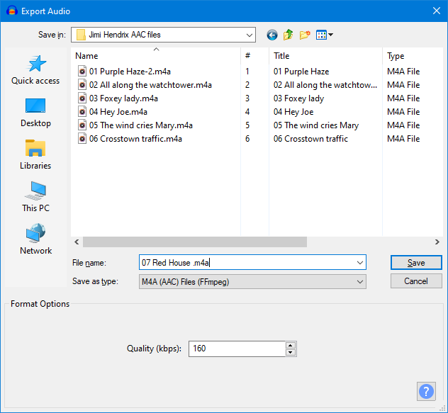

AAC Export Options
| FFmpeg is not shipped with Audacity but you can download it and then export as AAC by following these instructions. |
Please be aware that there is a bug in Audacity whereby the bit rate setting that you make in an AAC export is not always honored by Audacity. See this logged bug for more details.
|
- Accessed by: then choosing M4A(AAC) Files FFmpeg from the Save as type dropdown menu
- 
- Also accessed by: then choosing M4A(AAC) Files FFmpeg from the Save as type dropdown menu.
In this case the options dialog will appear in the center of the Export Multiple dialog.
Format Options
- Quality: This box controls the quality (bit rate in kbps) of the output AAC file. The Maximum bit rate (best quality) is 320 kbps (stereo) 160 kbps (mono) and the minimum is 98 kbps (mono).
You can use the up/down arrow-heads to change the required value or you can simply type it in.
The default quality setting of 160 typically produces a similar sized, but slightly higher quality file compared to an MP3 at Audacity's default 128 kbps constant bit rate. A stereo file is always produced, but a file exported from a mono track will have about half the bit rate (and hence half the file size) of one exported from a stereo track.
| On Mac please only use the up/down arrows to set your required bit rate as there is a bug whereby if you type a value Audacity will ignore that and use the last previously used value instead. |
This means that in order to maintain consistent quality throughout a track, a higher bit rate will be used when encoding a complex piece of audio (such as a full orchestral passage) than when encoding a solo voice or instrument. A recording which has more complex audio will produce a larger file. Increasing the sample rate in Audio Settings Preferences will increase the bit rate and so the file size (and vice versa).